safety.viz
safety.viz is a charting library for monitoring clinical trial safety. It's an agent-assisted update of the safetyGraphics framework.
Available renderers 14 of 16 migrated
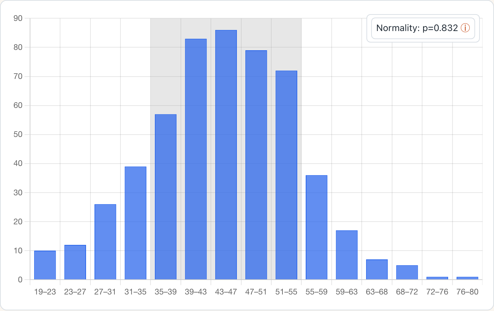
Safety Histogram Safety Histogram is exploratoryQualifiedValidated for regulated use. Nothing in safety.viz is, yet.ExploratoryThis chartTested and documented. Confirm every result.ExperimentalTested and documented, but what it shows or how it behaves may still change.PrototypeAn early look, on the docs site only. Not in the demo app.What each rung means
Distribution of a chosen lab or vital-sign measure with filters, grouping, normal-range overlay, and a linked participant listing.
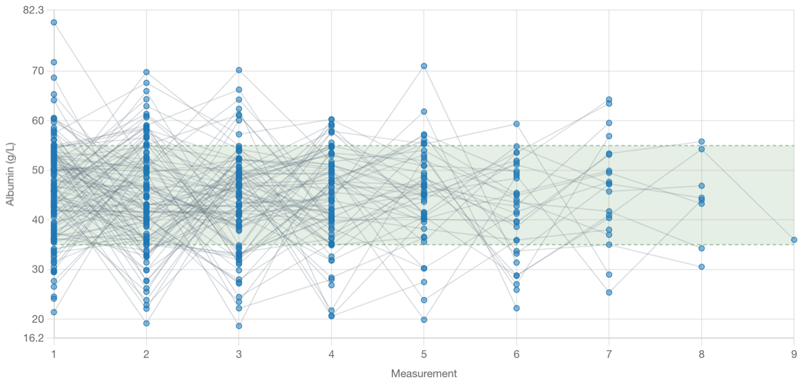
Safety Outlier Explorer Safety Outlier Explorer is exploratoryQualifiedValidated for regulated use. Nothing in safety.viz is, yet.ExploratoryThis chartTested and documented. Confirm every result.ExperimentalTested and documented, but what it shows or how it behaves may still change.PrototypeAn early look, on the docs site only. Not in the demo app.What each rung means
Participant-level results over time: one line per participant for the selected measure against a population normal-range band, with filters, x-axis and y-limit controls, color-by grouping, and click-to-select participant detail.
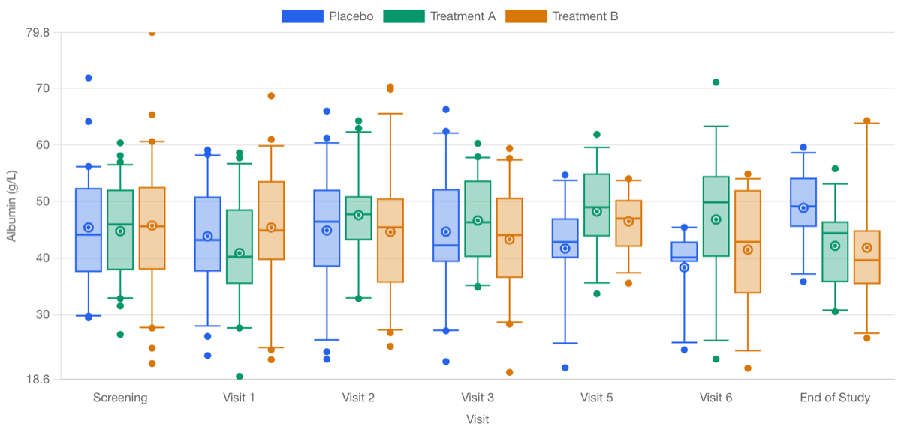
Safety Results Over Time Safety Results Over Time is exploratoryQualifiedValidated for regulated use. Nothing in safety.viz is, yet.ExploratoryThis chartTested and documented. Confirm every result.ExperimentalTested and documented, but what it shows or how it behaves may still change.PrototypeAn early look, on the docs site only. Not in the demo app.What each rung means
Population-level distribution of a measure at each study visit as box-and-whisker marks, with grouping, an outlier overlay, and linear/log y-axis controls.
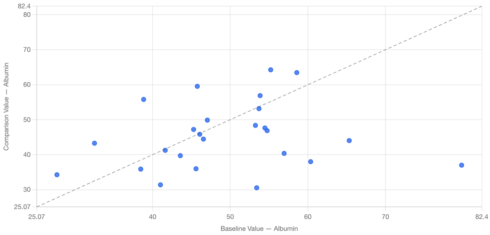
Safety Shift Plot Safety Shift Plot is exploratoryQualifiedValidated for regulated use. Nothing in safety.viz is, yet.ExploratoryThis chartTested and documented. Confirm every result.ExperimentalTested and documented, but what it shows or how it behaves may still change.PrototypeAn early look, on the docs site only. Not in the demo app.What each rung means
Baseline versus comparison-visit values for a measure on a scatter with an identity line, measure and visit controls, filters, and a brush selection that opens a linked participant listing.
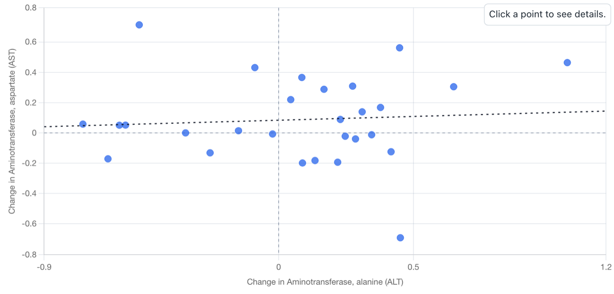
Safety Delta-Delta Safety Delta-Delta is exploratoryQualifiedValidated for regulated use. Nothing in safety.viz is, yet.ExploratoryThis chartTested and documented. Confirm every result.ExperimentalTested and documented, but what it shows or how it behaves may still change.PrototypeAn early look, on the docs site only. Not in the demo app.What each rung means
Paired change-from-baseline comparison of two measures on one scatter — quadrant reference lines, an optional regression line, measure and visit pickers, and a linked per-measure detail table with sparklines.
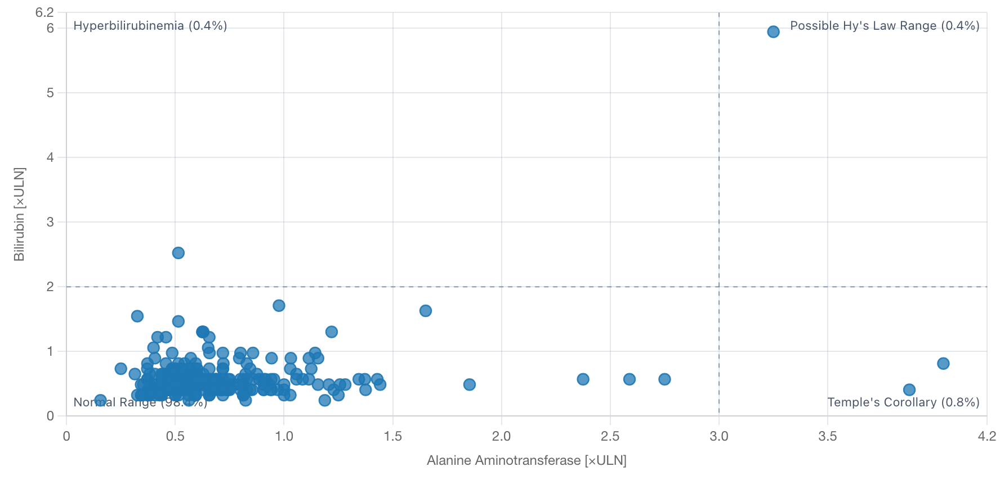
Hepatic Safety Explorer Hepatic Safety Explorer is exploratoryQualifiedValidated for regulated use. Nothing in safety.viz is, yet.ExploratoryThis chartTested and documented. Confirm every result.ExperimentalTested and documented, but what it shows or how it behaves may still change.PrototypeAn early look, on the docs site only. Not in the demo app.What each rung means
eDISH scatter of peak ALT vs peak total bilirubin (×ULN) with Hy's-Law quadrant cut-lines, a quadrant summary table, eDISH/mDISH display modes, R-Ratio and timing controls, and click-to-inspect participant visit paths — plus a baseline-referenced composite plot (Tesfaldet et al., Drug Safety 2024) for subjects with abnormal baseline liver tests, with pretreatment/on-treatment eDISH panels, a four-panel ×Baseline shift plot, and a migration table.
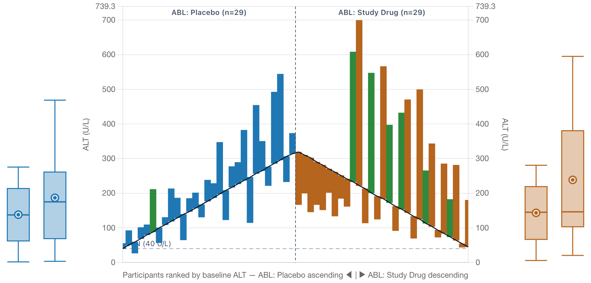
Hepatic ALT Waterfall Hepatic ALT Waterfall is experimentalExperimental: a new chart, drawn from a 2025 paper; its layout and settings may still change.QualifiedValidated for regulated use. Nothing in safety.viz is, yet.ExploratoryTested and documented. Confirm every result.ExperimentalThis chartTested and documented, but what it shows or how it behaves may still change.PrototypeAn early look, on the docs site only. Not in the demo app.What each rung means
For trials that enrol participants with elevated baseline ALT but normal baseline bilirubin, where eDISH's ×ULN quadrants lose their meaning — a floating bar per participant from their own baseline ALT to their maximum on-treatment ALT in absolute U/L, ranked by baseline so the two arms' highest baselines meet at the seam, blue for placebo and bronze for active drug with new-onset jaundice in green, flanked by a box-and-whisker summary per arm (Amirzadegan et al., Drug Safety 2025, Figure 5).
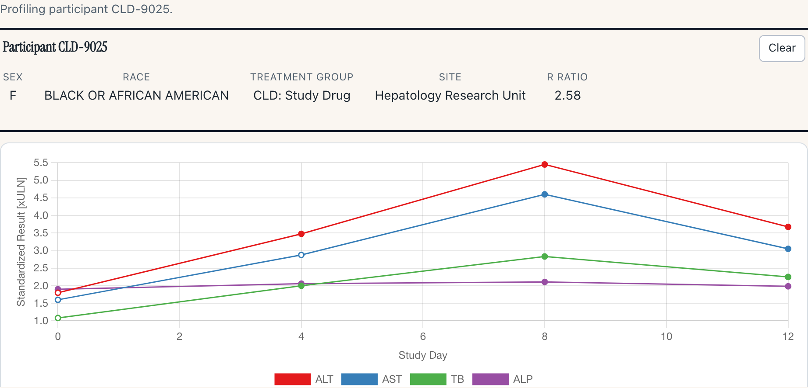
Participant Profile Participant Profile is experimentalExperimental: what it lists for a participant, and how, may still change.QualifiedValidated for regulated use. Nothing in safety.viz is, yet.ExploratoryTested and documented. Confirm every result.ExperimentalThis chartTested and documented, but what it shows or how it behaves may still change.PrototypeAn early look, on the docs site only. Not in the demo app.What each rung means
The standardized-lab participant drill-down as a chart-agnostic module: a demographics header with R Ratio and a templated record link-out, a labs-over-time spaghetti with reference cut-lines, and a per-measure summary table with sparklines that expand to an inset chart — stepping worst-first through a multi-participant cohort in a rail beside the Hepatic Safety Explorer, or mounted standalone against any chart that dispatches participantsSelected.
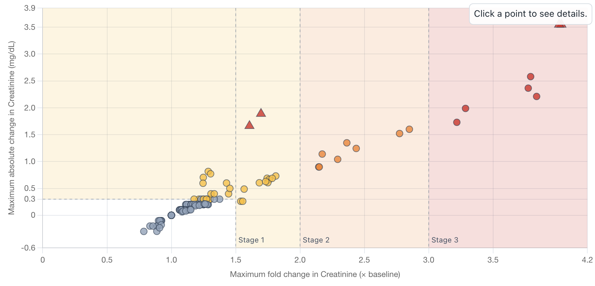
Nephrotoxicity Explorer Nephrotoxicity Explorer is experimentalExperimental until its kidney-injury staging has had a clinical review.QualifiedValidated for regulated use. Nothing in safety.viz is, yet.ExploratoryTested and documented. Confirm every result.ExperimentalThis chartTested and documented, but what it shows or how it behaves may still change.PrototypeAn early look, on the docs site only. Not in the demo app.What each rung means
KDIGO acute-kidney-injury screening: one point per participant at their maximum post-baseline fold change in serum creatinine against their maximum absolute change, over the L-shaped KDIGO stage zones, with a distinct mark for the ≥ 4.0 mg/dL Stage-3 rule, per-record mg/dL unit resolution, counted and exportable dropped records, and a stage summary table counting the population by fold change, by absolute change, and by the combined stage.
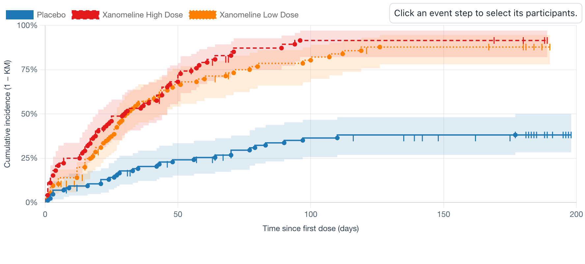
Time-to-Event Explorer Time-to-Event Explorer is experimentalExperimental until an external clinical review confirms its Kaplan–Meier estimates.QualifiedValidated for regulated use. Nothing in safety.viz is, yet.ExploratoryTested and documented. Confirm every result.ExperimentalThis chartTested and documented, but what it shows or how it behaves may still change.PrototypeAn early look, on the docs site only. Not in the demo app.What each rung means
Kaplan–Meier time-to-event display: step curves by treatment group with censoring tick marks, pointwise 95% confidence bands (Greenwood, log-log — matching survival::survfit), and the at-risk / cumulative-events strip table beneath the time axis, all derived from one estimator pass so the table cannot disagree with the curve. The endpoint is composed live from flexible multiselect filters over the event data — time to first qualifying event, censored at end of follow-up — with cumulative-incidence orientation by default and the estimator named on the axis.
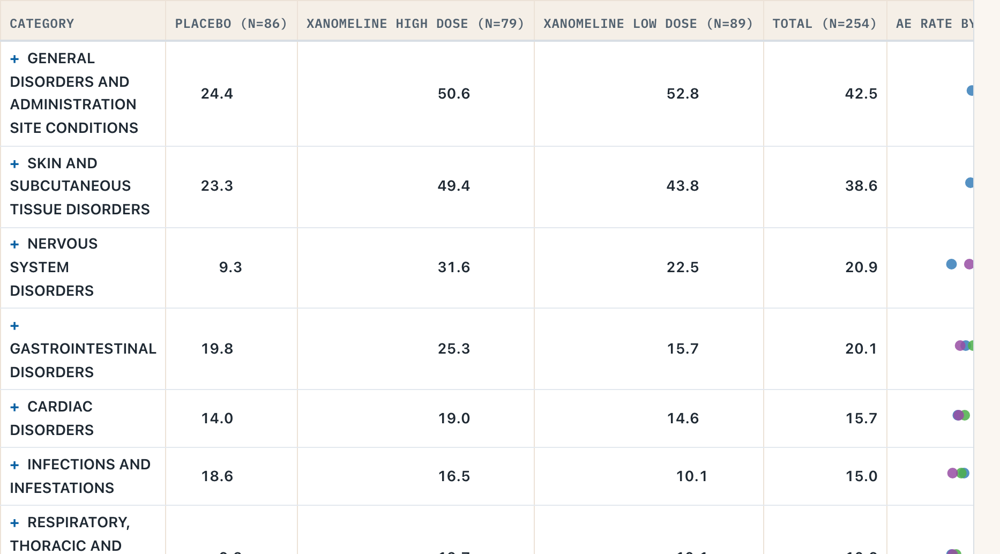
Adverse Event Explorer Adverse Event Explorer is exploratoryQualifiedValidated for regulated use. Nothing in safety.viz is, yet.ExploratoryThis chartTested and documented. Confirm every result.ExperimentalTested and documented, but what it shows or how it behaves may still change.PrototypeAn early look, on the docs site only. Not in the demo app.What each rung means
Hierarchical adverse-event incidence table — System Organ Class rows expandable to Preferred Terms — with per-arm rates, an inline rate dot plot, group-difference confidence intervals, prevalence/search/characteristic filters, and drill-down to the underlying records.
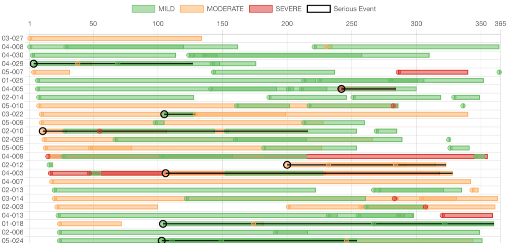
Adverse Event Timelines Adverse Event Timelines is exploratoryQualifiedValidated for regulated use. Nothing in safety.viz is, yet.ExploratoryThis chartTested and documented. Confirm every result.ExperimentalTested and documented, but what it shows or how it behaves may still change.PrototypeAn early look, on the docs site only. Not in the demo app.What each rung means
Participant-level adverse-event timelines by severity and onset relative to study start, with serious-event marks and click-through participant detail.
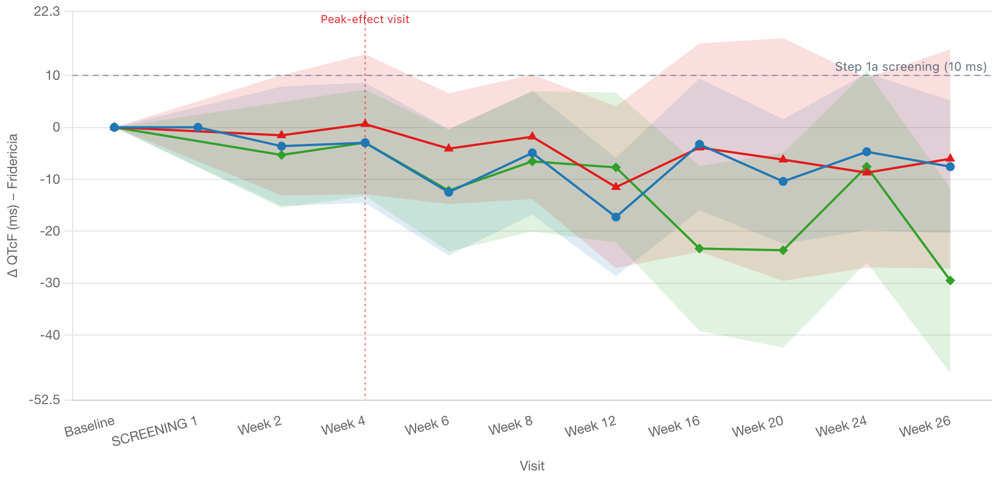
QT Safety Explorer QT Safety Explorer is experimentalExperimental: its settings and its table may still change.QualifiedValidated for regulated use. Nothing in safety.viz is, yet.ExploratoryTested and documented. Confirm every result.ExperimentalThis chartTested and documented, but what it shows or how it behaves may still change.PrototypeAn early look, on the docs site only. Not in the demo app.What each rung means
ECG QT/QTc safety review: per-arm central-tendency change over time (Δ / placebo-corrected ΔΔ) with a 90% CI band and the ICH-E14 metric, the flagship outlier scatter of change vs baseline with the 450/480/500 ms absolute diagonals and 30/60 ms change lines, and a by-arm categorical exceedance table — QTcF / QTcB corrections plus heart rate.
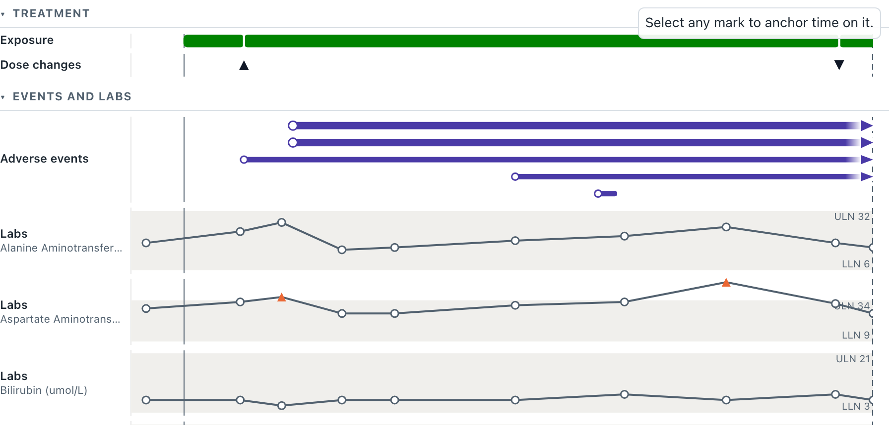
Patient Journey Explorer Patient Journey Explorer is a prototypeQualifiedValidated for regulated use. Nothing in safety.viz is, yet.ExploratoryTested and documented. Confirm every result.ExperimentalTested and documented, but what it shows or how it behaves may still change.PrototypeThis chartAn early look, on the docs site only. Not in the demo app.What each rung means
One participant’s whole safety record on a single study-day axis — exposure and dose changes, adverse events, labs, con-meds, medical history and disposition as stacked lanes; anchor time on any event to see the con-meds, abnormal labs and dose changes that co-occurred inside the context window, each linking back to its source row.
In the queue: Paneled Outlier Explorer · Web Codebook — each already has a reviewed requirement matrix in this repo.